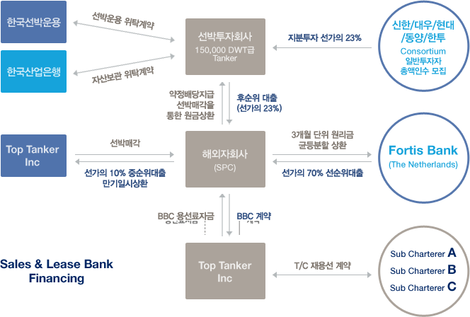

선박펀드
선박에 대한 투자기회를 국민에게 제공함과 동시에 국내 자본시장에서 선박에 대한 투자를 활성화함으로써 국내 해운산업의 발전 기반을 마련하기 위해 해양수산부가 제정 및 공표한 선박투자회사법에 의거하여 만들어진 실물펀드입니다.
-
비과세 혜택으로 저금리시대 높은 수익 제공
- 비과세 혜택
- - 액면가액 3억원 이하 배당 소득은 비과세 (2008년 12월 말까지 적용)
- - 액면가액 3억원 초과 배당 소득은 분리과세 (2008년 12월 말까지 적용)
- 고정 배당률
- - 매3개월 단위 배당으로 이자생활자에게 유리 (원화확정)
-
합리적인 안정성
- 외부평가기관 위험관리 및 재무분석
- - 법무법인과 회계법인의 투자타당성 검증
- - 대선/금융/선박건조계약/보험/환위험 사전 확정
- 신용보강
- - TOP Tanker의 Seller's Credit제공(선박매각대금의 10%지급유예,펀드만기시 상환)
- - 선박매각대금으로 선박펀드 원금상환 부족 시 TOP Tanker에서 펀드당 US$ 2M 손실보전
-
거래소 상장으로 인한 유동성 확보
주식시장 의무상장으로 환금성 확보

-
선박투자회사
- 다수의 투자자들로부터 선박확보자금을 모집하여 설립되는 회사
- 그 설립 목적은 선박에 투자하여 투자자들이 원하는 수준의 배당수익을 창출하는 것
-
선박운용회사
선박투자회사는 투자자들의 자금을 모으기 위한 서류상 회사 (Paper Company) 이며,모든 관련 당사자들 의 계약은 선박운용회사가 선박투자회사의 위임을 받아 처리
-
자산보관회사
선박투자회사 보유선박의 소유관련 증서, 유가증권, 현금 등의 자산을 보관 업무 수행
-
해외자회사
해외자회사(Special Purpose Company) 설립
(목적 : 조세감면 혜택 및 국내외 금융기관으로부터의 원활한 자금차입의 목적)
- 선박펀드에 대한 궁금하신 사항은 금융상품전담팀 1588-0365 으로 문의해주시기 바랍니다.